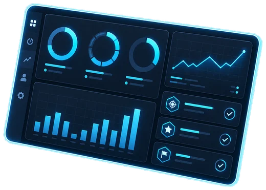
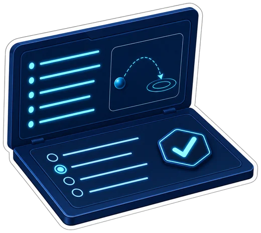
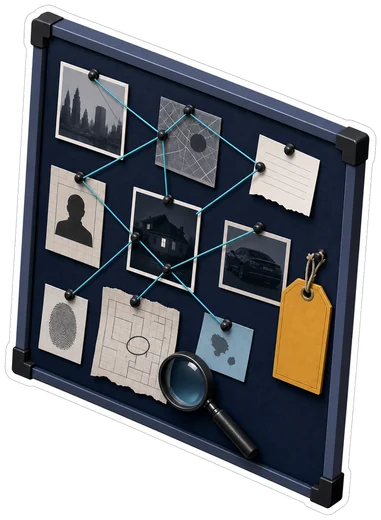
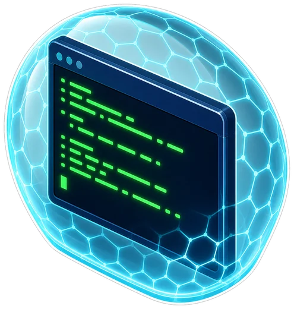
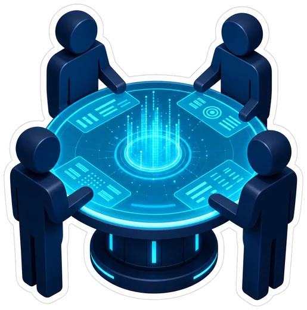
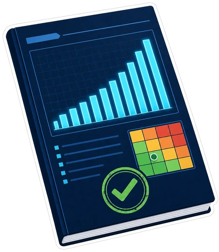
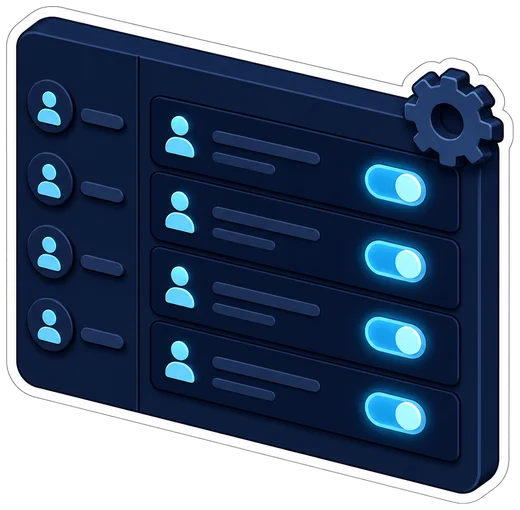

لوحة التقدم
تابع إنجازك الحقيقي في الدروس والمهام والتقارير.
شركة تدريب افتراضية في الأمن السيبراني
في CYBER LIFE لا تقرأ فقط، بل تتدرج، وتحقق، وتجمع أدلة، وتتخذ قرارات، وتكتب تقارير داخل بيئة تدريب آمنة ومنظمة.

كل خدمة لها دور واضح في رحلتك من متعلم مبتدئ إلى متدرب قادر على التحليل والتوثيق.
تابع إنجازك الحقيقي في الدروس والمهام والتقارير.
خمسة عشر فصلًا مرتبة من السلامة الرقمية إلى مشروع الشركة النهائي.

شرح عربي واضح، مصطلحات، أمثلة، أخطاء شائعة، وتقييمات.

استلم مهمة، اجمع الأدلة، اتخذ قرارات، وأغلقها بتقرير مقبول.

تدرب على أوامر وسجلات اصطناعية داخل بيئة محاكاة منضبطة.

اعمل مع زملاء محاكين يقدمون فرضيات وملاحظات قابلة للنقاش.

اكتب تقارير مهنية وراجعها وفق معايير واضحة.
احصل على أوسمة مبنية على تقدمك الفعلي وليس المجاملة.

إشراف على المحتوى والمستخدمين والتقارير وسجلات التدقيق.
تدرب على قراءة السجلات واكتشاف الأنماط وبناء الخط الزمني.
رحلة واضحة تحترم وقتك وتبني مهارتك خطوة بخطوة.
ابدأ بدرس عربي منظم يشرح الفكرة والمصطلحات والأخطاء الشائعة.
حل تمرينًا عمليًا أو مهمة داخل بيئة تدريب آمنة.
افحص أدلة اصطناعية، ميز الحقيقة عن الفرضية، واتخذ قرارًا مبررًا.
اكتب تقريرًا واضحًا، ثم راجعه وحسّنه بناءً على التقييم.
لن تعمل وحدك؛ ستتعلم كيف تناقش الزملاء وتختبر الفرضيات قبل اعتمادها.
العضو الرابع في الفريق، وصاحب القرار النهائي بعد جمع الأدلة.
باحثة أمنية تهتم بالمؤشرات التقنية والثغرات والسياق.
محلل سجلات وحوادث يبني الخط الزمني ويقارن المصادر.
أخصائية توثيق ومخاطر تحول النتائج إلى تقارير وتوصيات.
المنصة مصممة للتعليم المسؤول.
المختبر يستخدم بيانات وملفات اصطناعية، ولا ينفذ أوامر على أنظمة حقيقية.
كل مهمة تحدد نطاق العمل والصلاحيات قبل بدء التحقيق.
لا تشارك بيانات حقيقية أو تفحص أنظمة لا تملك إذنًا صريحًا باختبارها.
ادخل إلى المنصة، أنشئ فريقك، وابدأ أول درس ومهمة.
الدخول إلى المنصة